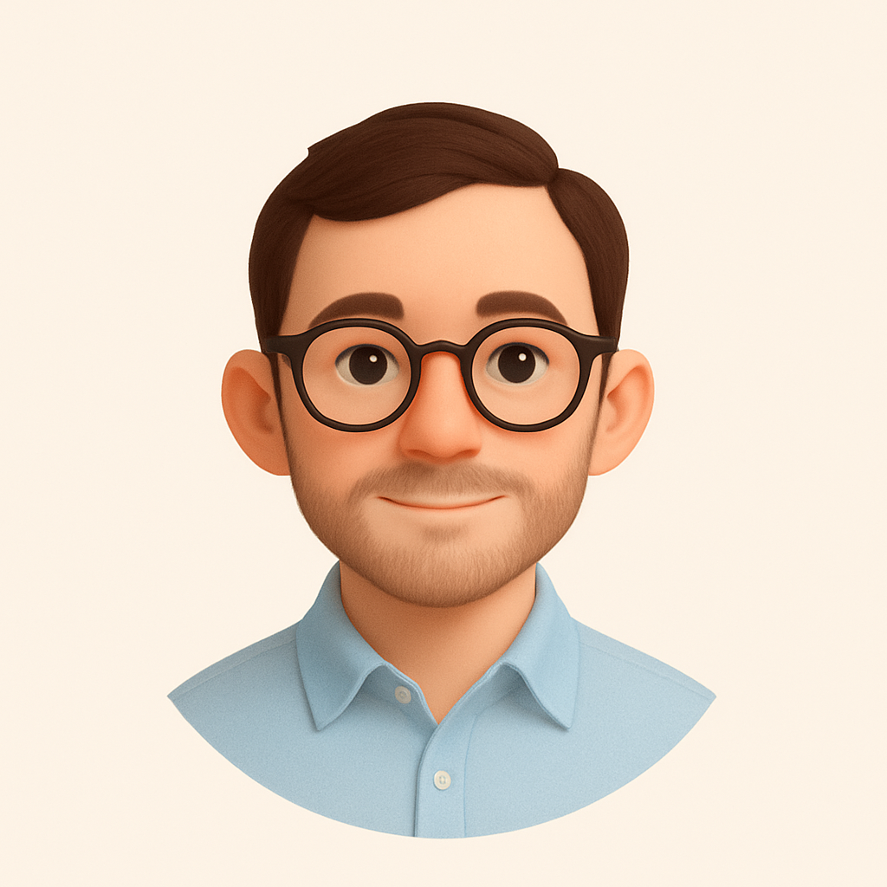

Daniele De Michele
Cagliari, Sardinia - Italy
A metà tra ingegneria e informatica. Product/Knowledge Designer nel tempo libero. Membro ufficiale della comunità Ubuntu e Ubuntu-it.
Attività recente
- Insegnante di Matematica e Fisica in scuola privata
- Tutor di Scienza delle Costruzioni at @Unica
- Studente in laurea magistrale - Strutture
- Ubuntu Member - supporto utenti e stesura newsletter
Stack
- Html, CSS, LaTeX
- Notion and Obsidian user, GitHub Pages, Linux Shell
- Bootstrap 5, Markdown and more
Progetti principali
Unisco ingegneria, informatica, design e informazione per trasformare problemi reali (lezioni, ricerca, booking) in supporto e strumenti concreti. Ogni progetto ha un obiettivo chiaro, uno stack minimo e qualcosa da scaricare/clonare. Qui sotto trovi i progetti che mantengo e aggiorno.
- Prenota un appuntamento!
- Prenota in un solo click: scegli lo slot con Calendly e blocca la tua lezione personale.
- Percorso di laurea triennale
- Base operativa per gli esami della triennale: appunti, libri, riassunti e risorse verificate.
- Percorso di laurea magistrale
- Base operativa per gli esami della magistrale: appunti, libri, riassunti e risorse verificate.
- La mia libreria digitale
- Un elenco mai definitivo di tutti i libri, riviste e articoli letti fino ad ora.
- Dashboard tutor & booking
- Gestione lezioni, pacchetti, pagamenti; Notion/Calendly.
Note
Spazio per aggiornamenti veloci o link rapidi (modificabile o removibile).